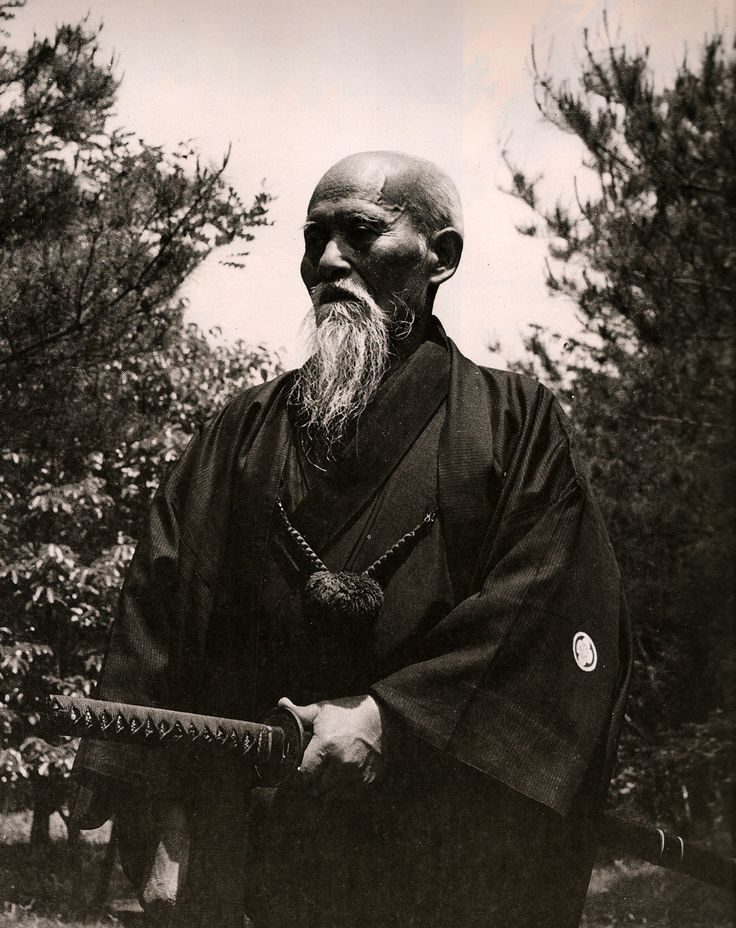
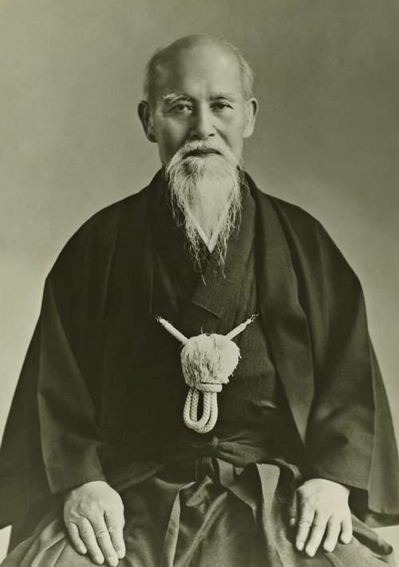
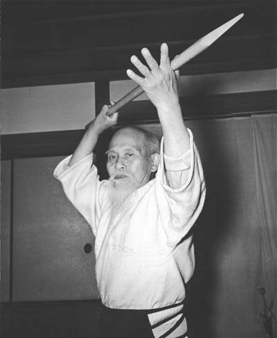
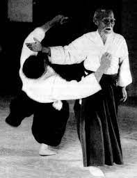

About aikido
A martial art of blending, balance and harmony
The art
Aikido (合気道) is often translated as "the way of harmonizing energy." It was developed in Japan in the first half of the twentieth century by Morihei Ueshiba, drawing on older jujutsu, sword and spear traditions.
Practice is cooperative. One partner attacks, the other responds with a technique, and then the roles switch. Learning to fall safely (ukemi) is as much a part of training as learning to throw.
[Optional: add a paragraph on the club's own history and affiliation, e.g. when it was founded and which organization grants ranks]

The founder
Morihei Ueshiba (1883 to 1969) is known to students of aikido as O-Sensei, "great teacher." The Aikikai Foundation and its Hombu Dojo in Tokyo, which he established, remain the headquarters of aikido worldwide and are led today by his grandson.
"Now and again, it is necessary to seclude yourself among deep mountains and hidden valleys to restore your link to the source of life."Morihei Ueshiba


